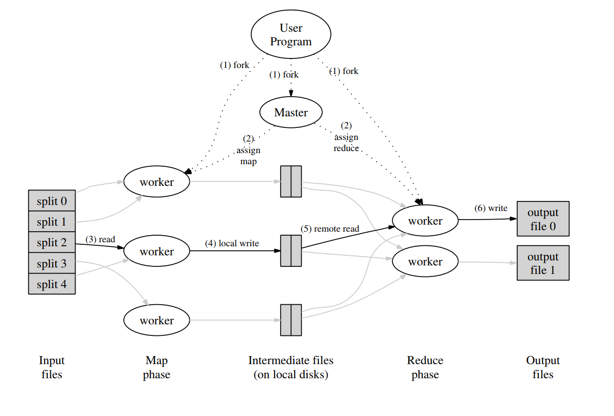

概述
这次的 Lab1 是根据 MapReduce 的论文来实现一个简易的 MapReduce 框架，需要具备基本的任务分发和超时任务检测机制。

先来回顾一下 MapReduce 的执行过程，论文中将其大致为如下几步
论文：MapReduce将用户输入分成 M 部分，每部分通常在 16-64MB ，并将用户程序（Map 函数和 Reduce 函数）拷贝到每台机器中。
本实验： 在本实验中，有若干个待处理的 txt 文件（pg-*.txt），可以将每个 txt 文件作为一个 Map 任务。同时，Map 函数和 Reduce 函数的代码已经被编译到文件 wc.so 中，各个 Worker 需要读取这个文件将两个函数加载进来。
论文： Master 将任务划分成 M 个 Map 任务和 R 个 Reduce 任务，每次寻找一个空闲的 Worker 将一个任务分配给它。
本实验：本实验中，Map 任务的数量和 Reduce 任务的数量都已经事先确定好了。Map 任务的数量就是输入的 txt 文件的数量，Reduce 任务的数量在 master 的入口程序中设定（后面会提到）。在任务分配方面，与论文有所不同，实验中采用的是 Worker 主动向 Master 拉取任务的方式。
论文： 执行 Map 任务的 Worker 读取输入文件，将文件传给 Map 函数，Map 函数解析文件内容并生成 key/value pairs 中间结果。这些中间结果会通过分区函数分成 R 个区域并写入本地磁盘中。Map 任务执行完后，Worker 将 R 个中间文件的回传给 Master，master 会将这些文件的位置传送给 Reduce worker。
本实验： 与论文的步骤大致相同
论文： 执行 Reduce 任务的 Worker 通过 RPC 从 Map Worker 所在主机的磁盘上读取这些中间文件，并通过 key 值进行排序，将具有相同 key 值的 key/value pair 传送到同一个 Reduce 任务中。Reduce 任务的输出同样输出到磁盘中。
本实验： 由于本实验是使用单机的多个进程来模拟多机的分布式环境，因此 Reduce 任务只需要从本地读取 Map 任务的中间结果即可。
任务完成。
下面根据代码详细介绍下这几个步骤
实现
准备工作
首先设定几个常量，来表示 master 当前所处的阶段（“Map阶段”、“Reduce阶段”或者“已完成”）和 每个任务的状态（未开始、进行中、完成）
1 | // master.go |
程序入口
master 程序和 worker 程序的入口分别为 main 目录下的 mrmaster.go 和 mrworker.go。
mrmaster.go
首先来看 mrmaster.go ，mrmaster.go 执行的命令为如下，可以看到 mrmaster.go会读取所有的输入文件作为参数。
1 | go run mrmaster.go pg-*.txt |
读取输入参数后，主函数调用 master.go 中的 MakeMaster 函数创建一个 Master 对象，MakeMaster传入的参数有两个，第一个参数为上面的输入文件 “pg-*.txt”，第二个参数为 reduce 任务的个数，这里固定为 10 个。
创建 Master 对象后，主函数每隔一秒会调用 m.Done() 函数判断 Master的所有任务是否都已完成，如果完成，那么整个流程结束，主程序将退出。
1 | // mrmaster.go |
我们可以先看一下 m.Done() 函数如何实现。前面说到，我们使用了 Phase_Map、Phase_Reduce、Phase_Complete 三个常量表示 Master 当前所处的状态。因此，只需要判断 Master 是否处于 Phase_Complete 状态即可，代码如下
1 | // Master.go |
mrworker.go
再来看 mrworker.go，mrworker.go 的执行命令如下，其中 wc.so 文件中包含了具体的 Map 和 Reduce 函数
1 | go run mrworker.go wc.so |
mrworker.go 通过 loadPlugin 方法加载map函数和reduce函数，然后调用 mr.Worker 方法正式执行。当所有任务都执行完毕时，mrworker.go就会结束。
1 | // mrworker.go |
Master 对象初始化
下面是 Master 对象中相关变量的定义，后面碰到某个变量时会对其详细解释，这里先暂时列出。
1 | // master.go |
mrmaster.go 通过调用 mr.MakeMaster(os.Args[1:], 10) 函数创建一个Master。
下面的MakeMaster函数主要做了三件事：1. 初始化 Master 对象的各个变量；2. 调用 m.server() 开启TCP服务监听；3. 初始化 map 任务，这里为了不阻塞 MakeMaster 过程，开启了一个新的线程异步的执行 map 任务的初始化。
1 | // master.go |
详细实现
下面结合介绍一下整个 lab 的详细实现。有一点要说明一下，下面几小节中各个方法的代码并不是完整的，我会删掉一些与该小节无关的代码以尽量避免干扰。
一 Map任务的初始化
首先是 Map 任务的初始化。在最开始，mrmaster.go中会调用MakeMaster 函数生成Master对象，而MakeMaster中会调用 GenerateMapTask 函数进行 map 任务的初始化，每一个 txt 文件为一个 map 任务。
该函数遍历所有的输入文件，为每个文件生成一个map任务，初始时任务为闲置（未开始）状态，当任务被分配或任务完成后，任务状态会相应的改变。map任务生成后，将其放入 MapTasks 数组存储起来，同时将其放入 MapTaskChan 中用于后面任务的分配。
1 | // master.go |
二、 Worker向 Master 拉取 Map 任务
当 Worker 成功启动后，就可以向 Master 发起 RPC 调用来申请任务了。同时，根据 MapReduce 的特性，Master 刚开始分配的任务都是 Map 任务，只有在所有的 Map 任务都执行完毕后才会开始分配 Reduce 任务。本小节只介绍 Map 任务的申请。（为了减少代码的干扰，下面的代码中删去了与 Reduce 任务相关的部分）
在mrworker.go 中，通过调用 mr.Worker(mapf, reducef) 方法并传入 mapf 和 reducef 两个函数作为参数完成 Worker 对象的创建工作。Worker 创建后，会调用 Run() 方法正式开始工作。
1 | // worker.go |
Worker 开始工作后，首先调用 PullTask() 方法获取一个任务。
1 | // worker.go |
PullTask() 方法会通过 RPC 调用 Master 的 AssignTask 方法向其申请任务。这里暂不考虑RPC调用失败的情况
1 | // worker.go |
Master 接收到任务申请的请求后，检查 MapTaskChan 中是否还有空闲的任务。如果存在，则分配该任务并将任务状态修改为 Progress；如果暂时没有空闲的任务可以分配，则返回 nil
1 | // master.go |
Worker 从 PullTask 中接收到任务后，首先检查任务的状态。如果任务为 nil ，则说明 master 当前没有空闲的任务可以分配，这时候，为了避免 Worker 再频繁的向 Master 申请任务，可以先让 Worker 进程挂起一段时间（Sleep 1s），在这之后，再与 Master 通信。如果成功拿到任务，则调用 RunMapTask() 方法执行 Map 任务。
这里的 for 循环是个死循环，Worker 执行完一个任务后，可以再向 Master 申请下一个任务。for 循环的退出条件会在后面的 Reduce 任务相关小节说明。
1 | // master.go |
三、Map 任务执行
Worker 接收到来自 Master 分配的 Map 任务后，调用 RunMapTask 方法执行 Map 任务。
这部分代码与 “串行MapReduce示例“的代码基本一致，这里不作过多阐述。需要注意的是，Map任务的输出需要按照分区写入多个文件中，文件的数量与NReduce一致。每个中间文件的名称为 “mr-taskId-partitionId”
1 | // worker.go |
Map 任务完成后，调用 ReportTaskFinish 向 Master 报告
1 | // worker.go |
四、Worker 执行完 Map 任务，向 Master 报告
Master 收到 Worker完成Map任务的消息后，修改这个Map任务的状态（状态变为 Completed 状态），并将Map任务产生的中间文件的位置存储下来。注意以上所有的修改均需要加锁，以避免不一致的情况。 同时，Master 还维护了 NCompleteMap 变量记录了当前已完成的Map任务的数量，当所有的Map任务均已经完成时，Master 转为 Reduce 阶段，并初始化 Reduce 任务。
1 | // master.go |
五、Master 初始化 Reduce 任务
每个 Map 任务会输出 NReduce 个中间文件，因此 NMap 个 Map 任务总共输出 NReduce * NMap 个中间文件。在 Reduce 任务阶段，每个Reduce任务负责其中1个分区的所有中间文件。
1 | // master.go |
六、Worker 向 Master 申请 Reduce 任务
这部分代码与前一部分基本一致；这里把Reduce任务相关的代码添加上。
Worker 调用 PullTask 方法向 Master 申请任务，Master 会返回自己当前所处的阶段作为任务标识
- 如果 Master 处于 Phase_Complete 阶段，说明所有任务均已完成，此时 Worker 退出
- 如果 Master 处于 Phase_Map 阶段，说明拿到的任务为 Map 任务，此时调用 RunMapTask 执行 Map 任务
- 如果 Master 处于 Phase_Reduce 阶段，说明拿到的任务为 Reduce 任务，此时调用 RunReduceTask 执行 Reduce 任务
1 | // worker.go |
PullTask 方法通过 RPC 向 Master 申请任务
1 | // worker.go |
注意，这里的 PullTaskReply{} 中的任务既可以是 Map 任务，又可以是 Reduce 任务。因此，在该对象中，使用go中的任意类型 interface{} 来表示任务
1 | // rpc.go |
七、Worker 执行 Reduce 任务
在Reduce执行阶段，Worker读取Map任务产生的中间文件，调用 Reduce 函数计算后，将结果写入一个最终文件中，文件名为 “mr-out-taskId”。任务执行完成后，向 Master 报告
1 | // worker.go |
八、Worker 执行完 Reduce 任务，向 Master 报告
Master 根据 TaskPhase 参数判断 worker 提交的任务的类型。对于 reduce 任务，Master 维护了 NCompleteReduce 变量来表示当前已经完成的 reduce 任务的数量。若所有任务均已完成，Master会转变为 Phase_Completed 阶段。
1 | // master.go |
九、超时任务监测及重分配
对于分配出去的每一个任务，Master 都会开启一个新的线程来监测该任务的状态（下面的 go m.MonitorMapTask(mapTask) 或 go m.MonitorReduceTask(reduceTask)）。
1 | // master.go |
以 go m.MonitorReduceTask(reduceTask) 为例。该方法使用一个 NewTicker 定时器，该定时器相当于一个 channel，每隔 10s，系统会向定时器中发送一条信息。下面的 for 循环持续监测任务的状态，如果超过10s后任务仍未完成，将默认worker已经宕机。此时，这个任务会被设为 Idel 状态并重新加入任务队列 ReduceTaskChan 中
1 | // master.go |
以上就是整个代码的主体部分。所有代码的汇总见下一小节。
代码汇总
master.go
1 | package mr |
worker.go
1 | package mr |
rpc.go
1 | package mr |